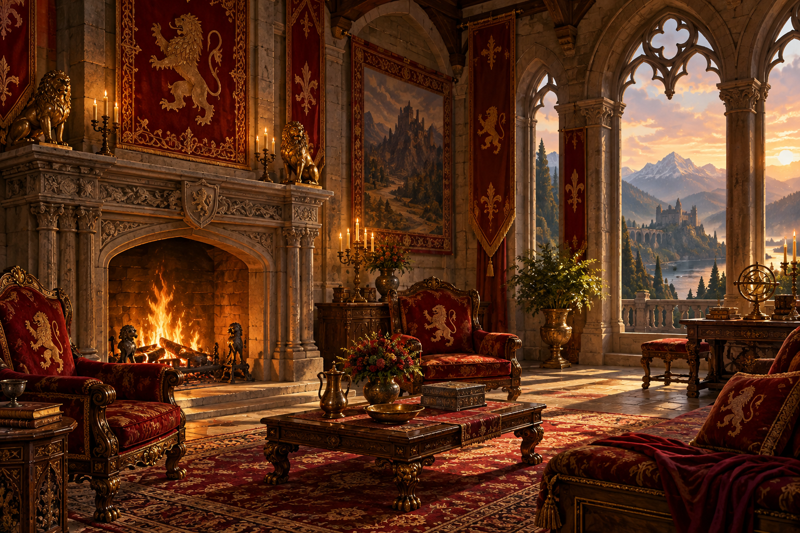
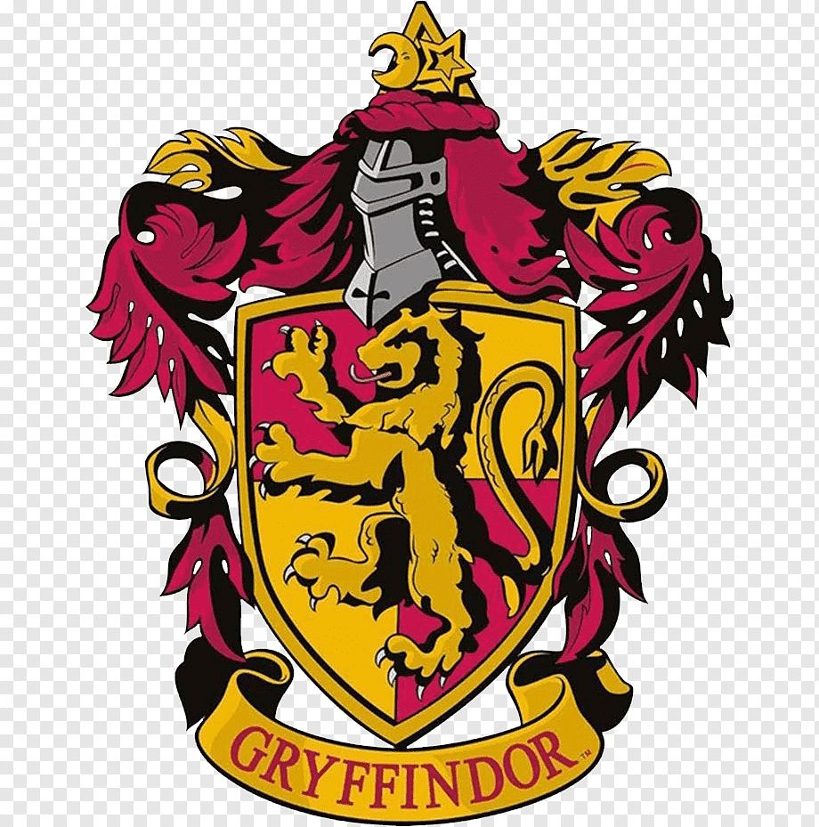

Harry Potter
La valentía de proteger a quienes ama.
El valor de dar el primer paso
La valentía comienza cuando decides actuar, incluso si el camino todavía te parece incierto.


Godric Gryffindor fue uno de los cuatro fundadores de Hogwarts. Su casa reúne a estudiantes que afrontan el miedo y defienden sus convicciones. Su sala común se encuentra en una torre del castillo.
La asociación elemental es simbólica. Los emblemas de este sitio son interpretaciones gráficas.
Una casa reúne historias distintas. Sus valores se expresan de maneras diversas.
La valentía de proteger a quienes ama.
Conocimiento y decisión al servicio de sus amigos.
El coraje también se aprende, paso a paso.
“El coraje no borra el miedo: nos invita a avanzar.”FRASE ORIGINAL PARA ESTE EJEMPLO · NO ES UNA CITA DE LA SAGA
Regla 60-30-10 orientativa: base oscura dominante, superficies e imagen como apoyo, y acento para detalles, enlaces y símbolos.
Una familia local distingue a la casa. El texto de lectura mantiene la familia Archivo y una longitud cómoda de línea.
Contenido adaptado con fines educativos de HarryPotter.com. Frase original; escena generada y escudo reinterpretado.